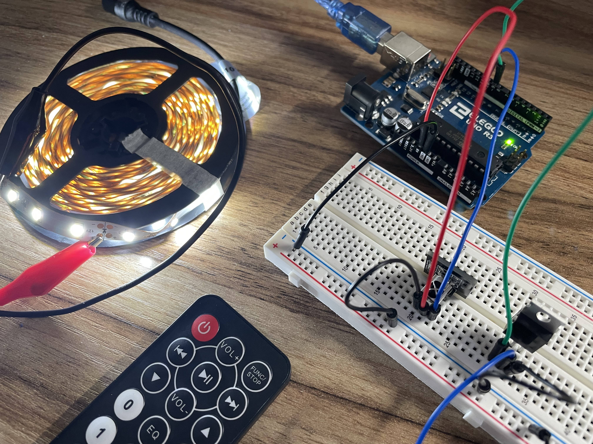
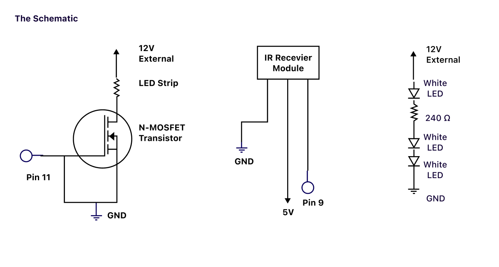
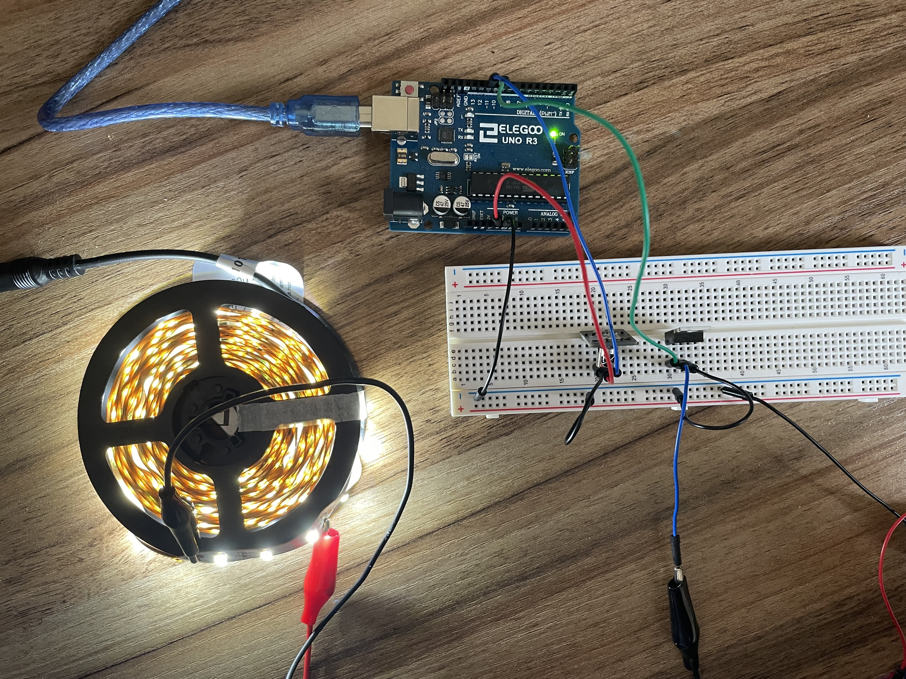

External Voltage and Transistors

Assignment
For this assignment, I built a circuit that controls an LED strip with a remote controller. A user can set the LED strip to four light settings: 3 different brightness settings and one fade setting. The power button on the remote controls turns off all lights. Buttons 1,2,3 and 5 control the lighting of the strip from least bright to most bright to fade, respectively
The Schematic

Here is my schematic for the transistor, IR Receiver and one segment of the LED strip.
White LED have a 3.3V drop
3 White LEDs per segment
3*3.3=9.9V
12V-9.9V = 2.1V
V=IR Ohm’s Law
2.1V = I (240Ω)
I = 0.00875 A = 8.75mA
8.75mA * 100 = 875mA
This works out because the N-MOSFET transistors we are using can handle a much greater current than that.
The Code
// Carol Lei
// A5 - Programs a remote to control an LED strip
// Code comments with '*' come from Arduino Fade examples
#include // include remote library
const int RECV_PIN = 11; // remote pin as pin 11
IRrecv irrecv(RECV_PIN); // create receiver object at pin
decode_results results; // declare results type
int led = 9; // the PWM pin the LED is attached to
int brightness = 0; // how bright the LED is
int fadeAmount = 5; // how many points to fade the LED by
boolean fade = false; // declare fade as false
void setup() {
Serial.begin(9600); //initialize serial at 9600 baud
irrecv.enableIRIn(); // start the receiver
irrecv.blink13(true); // blink sensor when remote is clicked
pinMode(led, OUTPUT); // set LED to output
}
void loop() {
if (irrecv.decode(&results)) { // if remote is clicked
switch (results.value) { // check the following cases
case 0xFF30CF: // case Keypad button "1"
fade = false; // set fade to false
analogWrite(led, 25); // set the brightness to 25 brightness
break; // exit switch case
case 0xFF18E7: // case Keypad button "2"
fade = false; // set fade to false
analogWrite(led, 85); // set the brightness to 85 brightness
break; // exit switch case
case 0xFF7A85: // case Keypad button "3"
fade = false; // set fade to false
analogWrite(led, 150); // set the brightness to 150 brightness
break; // exit switch case
case 0xFF38C7: // case Keypad button "5"
fade = true; // set fade to true
break; // exit switch case
case 0xFFA25D: // case Keypad on/off button
fade = false; // set fade to false
analogWrite(led, 0); // turn LED off
}
irrecv.resume(); // receive next value from remote
}
if (fade) { // if fade is true*
analogWrite(led, brightness); // set the brightness of pin 9*
brightness = brightness + fadeAmount; // change the brightness for next time through the loop*
if (brightness <= 0 || brightness >= 255) { // reverse the direction of the fading at the ends of the fade*
fadeAmount = -fadeAmount; // reverse fade*
}
delay(30); // delay for fade effect*
}
}
This is the code I used to develop the behavior I wanted. I am using analogWrite() to change the LED light brightness and behavior. See the comments in the code for further explanations.
My breadboard

Here is my breadboard with a transistor connected to an LED strip, and a remote sensor with a remote controller.
The LED strip is connected to a wall outlet.
Remote Control!

Use the remote to control the LED strip light setting.